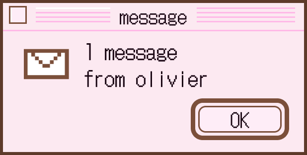
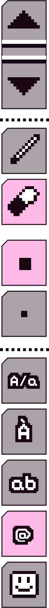
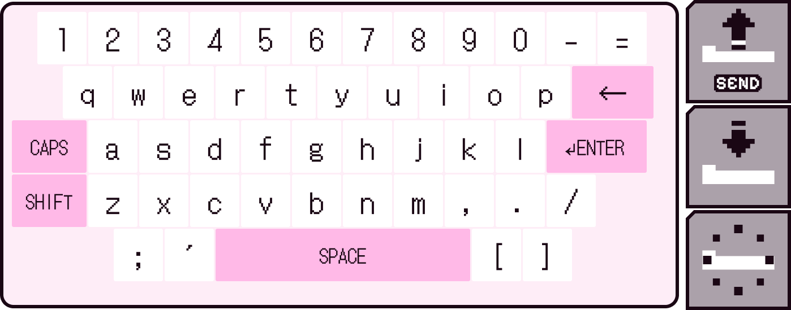

olivier's icons ♪


My research studies the quality of human conversation — and the points where it breaks down — through speech.
I model dialogue from two directions at once: what is said, through language and LLM-based analysis, and how it is said, through prosody and timing. Each direction captures what the other misses, and reading them together surfaces what neither shows alone: depth and responsiveness in facilitated group dialogue, early traces of cognitive and affective decline in how a person talks, and the shifts in trust and memory that follow when a voice turns out to be synthetic.
Working across Speech and Language Processing, Human–AI Interaction, and Computational Communication, I build interpretable models to understand how people communicate, connect, and respond through speech.
Speech & Language Processing · Human–AI Interaction · Computational Communication

academic path
GPA 4.44 / 4.5 · expected Aug 2027
GPA 4.32 / 4.5 · Summa Cum Laude
selected works ♪
research & work
Leading the audio analysis, building a speech pipeline to test how prosody complements text-based measures.
Implemented and fine-tuned deep models in PyTorch for speech & language processing.
Interdisciplinary collaborations across communication, HCI, and AI.